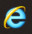
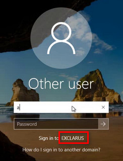
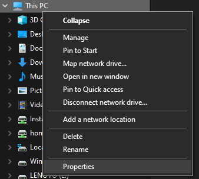
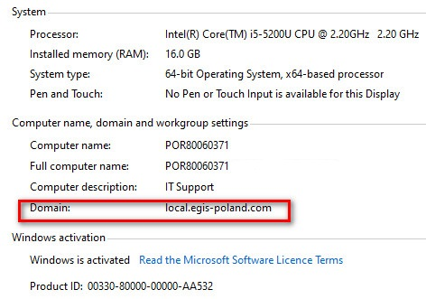
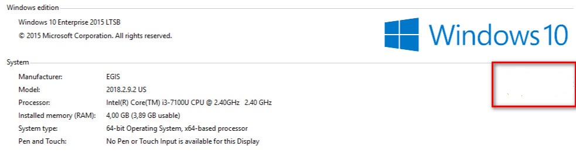
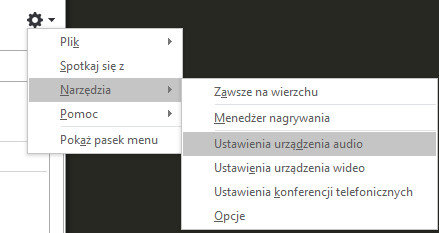
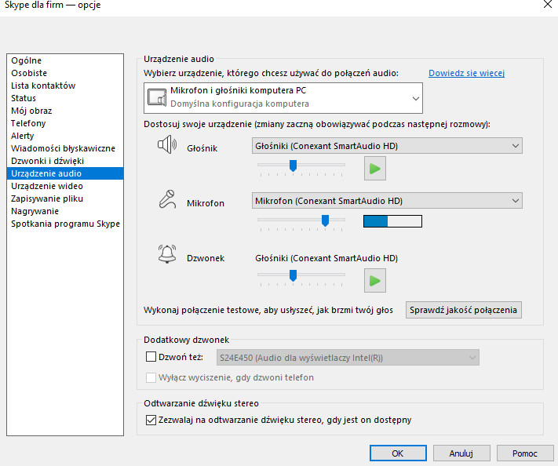
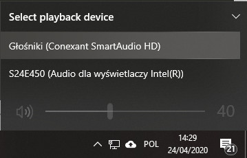

FAQ
→ Jak złożyć zgłosznie?
2. Jeśli komputer ma polski sytem zgłoszenia należy składać na adres helpdesk@support..
→ Nie mogę zalogować sie do E-time.
 a nie
2. Jeśli nie można zalogować się na swój adres e-mail, proszę spróbować za pomocą konta domenowego w GB. Nazwę użytkownika należy poprzedzić identyfikatorem domeny, przykładowy login będzie wyglądał:
Comapany\j.nowak
3. Program który uruchomi odpowiednią przeglądarkę razem z stroną znajduje się TU.
Rodzaje przeglądarek używanych w Comapany:
- Google Chrome:
- Firefox:
- Brave:
- Opera:
- Internet Exorer:
- Microsoft Edge:
→ Rodzaje przeglądarek używanych w Comapany:
| Google Chrome | |
| Firefox | |
| Brave | |
| Opera | |
| Internet Exorer | |
| Microsoft Edge | lub |
→ Nie można zalogować sie do usług gb.
2.Jeśli nasze dane powinny być poprawne, a otrzymujemy negatwyny komunikat. Proszę się zalogować poprzez stronę WEB. Jeśli podczas logowania przez stronę WEB nie udaje nam się dalej zalogować i otrzymujemy któryś z komunikatów: „Konto wygasło”, „Nieprawidłowa nazwa użytkownika lub hasło. Wprowadź ponownie informacje o użytkowniku.” Oznacza to konieczność założenia zgłoszenia do DSI w gbancji. W tym celu proszę o utworzenie zgłoszenia dla działu IT.
3.Jeśli podczas logowania otrzymamy komunikat o konieczności zmiany hasło, musimy to zrobić. Bez tego połączeni VPN jest nie możliwe. W tym celu musimy podać aktualne hasło, oraz nowe dwukrotnie nowe hasło.
→ Czy mój komputer jest zmasteryzowany?

2. Lub jeśli po uruchomieniu właściwości komputera w polu domena jest napis "Comapany..local", zamiast "local.Comapany.com".  .
3. Lub jeśli po uruchomieniu właściwości komputera w wskazanym polu jest logo i napis "Comapany". 
4. Lub jeśli język systemu jest angielski, to zazwyczaj znaczy że komputer jest zmasteryzowany.
→ Dlaczego połączenie przez Skype for buisness(Skype dla firm)/Lync nie działa lub nie jest możliwe?
2. Nie można również zestawić połączenia z osobami korzystającymi z zwykłej wersji Skype lub Microsoft Teams.
3. Dołaczenie do spotkania jest mozliwe tylko przy poprawnie skonfigurowanych urządzenaich audio. W celu konfiguracji należy w Skype wejsć w "Ustawienia" ==> "Ustawienia audio" i wybrać odpowiednie urządzenie.
 
4. Jeśli urządzenia nie są widoczne w Skype prosze sprawdzic czy są poprawnie podłączone do komputera oraz czy są widoczne w systemie. 
5. Może sie zdarzyć że mimo widocznych i działających w systemie słuchawek, nie są one widoczne i nie działają w programie. Dzieje sie to z powodu niekompatybliności niektórych kart dzwiękowych z programem Skype for buissnes. Zalecamy wtedy skorzystanie z słuchawek USB.
Przypomiamy że 31 lipca 2021 roku porzucony zostanie rozwój Skype for Business przez firmę Microsoft.
→ Dlaczego nie moge podpisać dokumentu na stronie web przez przeglądarkę?
2. Uruchom stronę w przeglądarce Internet Exorer.
3. Dodaj stronę do "Zaufanych witryn" w przeglądarce. TU znajdziesz instrukcje jak tego dokonać.
4. Jeśli dalej występują problemy należy dodać witrynę również do "Wyjątków bezpieczeństwa" w panelu Java. TU znajdziesz instrukcje jak tego dokonać.
5. Jeżeli dalej aikacja sie nie uruchamia, dodaj stronę "Wyjątków bezpieczeństwa" w panelu Java bez przedrostków "www." oraz zamiast "https" wpisz "http". Czesto zadarza sie ze aiakcje web-owe nie działaja poprawnie z tego powodu.
→ Jak połączyć się do sieci Wi-Fi w biurze?
W celu szybszego dostępu do sieci na urządzeniach mobilnych w kilku miejscach można odnaleść kody QR oraz karty NFC dzięki którym można podłaczyć sie bezproblemowo do sieci WiFi. Karty NFC są dostępne dla gości w sekretarciacie oraz dużej i małej sali konferencyjnej. Aby sieć została dodana należy w telefonie uruchomić NFC ,a następnie przylożyć kartę do telefonu. Wtedy zostanie wyświetlony monit o dodanie nowej sieci. W przypadku gdy na urządzeniu mobilnym nie posiadamy NFC lub standard kary Milfare nie jest obsługiwany przez telefon należy postępować zgodnie z instrukacjami poniżej.
Andoroid 10 lub inny telefon z aikacją QR Scaner
1. W przypadku Android 10 należy wejść w ustawienia, Wi-Fi, a następnie dodać nową sieć skanować poniższy kod QR. DOkłądna instrukcja pod linkeim: Podłączenie Wi-Fi kodem QR w Android 10.2. Jeśli używamy telefonu z innym systemem niż Android 10. Należy pobrać dowolną aikację do odczytu kodów QR. A następnie za jej pomocą odczytać kod.

Komputery i inne systemy
1. W telefonie należy zeskanowoać poniższy kod QR i wejsć na link odsyłąjący, tam znajduje się hasło do sieci Wi-Fi.
2. Jeśli nie mamy zainstalwoanej aikcaji do kodów QR, do danych do logowania można dostać sie poprzez adres: dane do Wi-Fi
→ Jakich danych do logowania użyć?
Ze względu na systemy hasła w Comapany można podzielić nastęujaco:
- domena Comapany.gb
- domena Comapany.
- Postfix
- Microsoft
- Bentley
- t
- e-pracownik
Wszytskie wymienione systemy są niezależne i daltego nie można zsynchronizowac haseł.
| System | Usługa | Obsługa informatyczna | Strona | Przykładowy login | Hasło | Resetowanie | ||||||||
| Komputer GB | Komputer polski | GB | GLPI | Postfix | Microsoft | Bentley | E-timet | e-pracownik | ||||||
| Domena Comapany | E-Time | DSI | https://su | j.kowalski lub jan.kowalski@Comapany.bg | Comapany\j.kowalski lub jan.kowalski@Comapany.gb | ✔ | INSTRUKCJA | |||||||
| GLPI | DSI/helpdesk | https://helpdesk.Comapany.gb/ | j.kowalski | ✔ | ||||||||||
| Citrix | DSI | https://citrix.Comapany.gb | j.kowalski | ✔ | ||||||||||
| Skype dla firm / Lync | DSI | https://www.skype.com//business/ | jan.kowalski@Comapany.gb user: Comapany\j.kowalski | ✔ | ||||||||||
| Extranet | DSI | https://url | j.kowalski | ✔ | ||||||||||
| MyComapany | DSI | https://myComapany.Comapany.gb/ | j.kowalski | ✔ | ||||||||||
| Webmail | DSI | https://webmail.Comapany.gb/ | j.kowalski | ✔ | ||||||||||
| Deal | Deal | http://dealprod.Comapany.gb/ | j.kowalski | ✔ | ||||||||||
| MediaHub | DSI | https://www.Comapany-mediahub.com/ | j.kowalski | ✔ | ||||||||||
| Komputer zmasteryzowany i usługi udostępnione w domenie Comapany | DSI | j.kowalski | Comapany\j.kowalski | ✔ | ||||||||||
| Domena Comapany | HRDB | Outsorcing | http:// | Comapany\j.kowalski | j.kowalski | ✔ | INSTRUKCJA | Link | ||||||
| Dyski i inne zasoby udostępnione z 10.220.102.11 | Outsorcing | \\ | Comapany\j.kowalski | j.kowalski | ✔ | |||||||||
| Aikacje RDP* | Outsorcing | Comapany\j.kowalski | j.kowalski | ✔ | ||||||||||
| Komputery i usługi w domenie Comapany | Outsorcing | Comapany\j.kowalski | j.kowalski | ✔ | ||||||||||
| Postfix | poczta IMAP | Outsorcing | https://poczta.Comapany.com/ | j.nowak@Comapany.com | ✔ | ✔ | LINK | |||||||
| IMAP autoresponder | Outsorcing | http://poczta.Comapany.com | j.nowak@Comapany.com | ✔ | ||||||||||
| Microsoft | Poczta exchange | Outsorcing | https://www.office.com/ | j.kowalski@Comapany.com | ✔ ** | https://www.office.com/ |
||||||||
| MS Teams | Outsorcing | MS Teams online | j.kowalski@Comapany.com | ✔ *** | ||||||||||
| Onedrive, OneNote, Publisher, SharePoint | Outsorcing | https://www.office.com/</a | j.kowalski@Comapany.com | ✔ *** | ||||||||||
| Bentely | Connection client | DSI | https://ims.bentley.com/ | jan.kowalski@Comapany.gb | ✔ | linklub link2 | ||||||||
| t | t | Outsorcing | t zew.t wew.EPs | j.kowalski | ✔ | helpdesk@Comapany.com | ||||||||
| E-pracownik | e-pracownik | outsorcing | https://Comapanyurlopy.Comapany.com/ | j.kowalski | ✔ | @Comapany.com lubhelpdesk@Comapany.com |
||||||||
* RDP to aikcaje ktore działaja za pomocą pulpitu zdlanego i są wykorzystwayne w przypdaku prgramów SAGE oraz Abby Fine Reader 9.0 .
** Usługa dostępna tylko dla użytkowników z wykupioną usługa Microsoft 365.
** Częsć usług i funkcjonalności moze nie być dostępna w przypdaku użytkowników z darmowymi licencjami.